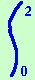

|
devo fare: (-x2+4)dx = faccio l'integrale indefinito (trascurando le costanti)  (-x2+4)dx = (-x2+4)dx =
e' una somma; posso fare = -x2dx + 4dx =
o meglio, estraendo il segno meno dal primo integrale ed il 4 dal secondo integrale = - x2dx + 4 dx =
e quindi ottengo = -x3/3 + 4 x |